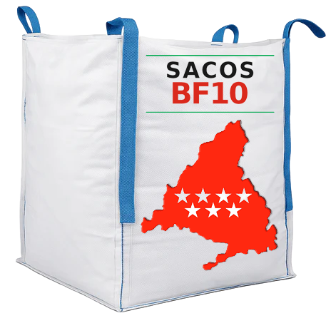

El aliado de reformistas, albañiles y empresas de construcción en Madrid. Te llevamos los sacos de 1m³ a pie de obra, tú los llenas con los escombros de tu reforma, y nosotros los recogemos y gestionamos en vertedero autorizado. Sin sorpresas, sin letra pequeña.

Solución rápida y económica para reformistas, albañiles y empresas de construcción. Precio cerrado desde el primer momento, sin sorpresas ni costes ocultos.
Ideal para pequeñas reformas de baño, cocina o una habitación. Perfecto para autónomos y albañiles con trabajos puntuales. Entrega a domicilio incluida.
El más solicitado por empresas de reforma para reformas integrales de vivienda. Entrega, recogida y gestión de residuos en vertedero autorizado, todo incluido.
Para obras de mayor envergadura y empresas de construcción. El mejor precio por saco con entrega, recogida y certificado de gestión de residuos de construcción y demolición (RCD).
En 4 sencillos pasos tendrás tu obra limpia
Llámanos, escríbenos por WhatsApp o usa la web. Dinos cuántos sacos necesitas, dirección de la obra y fecha de entrega. Trabajamos con reformistas, constructoras y particulares.
Entregamos los sacos en tu dirección y los colocamos donde mejor te convenga. En 24-48 horas.
Llena los sacos a tu ritmo con los escombros de tu obra o reforma. Sin prisas, sin límite de tiempo.
Nos llamas cuando estén llenos, los recogemos en 24-48h y nos encargamos del transporte a vertedero autorizado. Recibirás factura y certificado de correcta gestión de residuos de construcción.
Lo que nos diferencia de la competencia
Servicio rápido en toda la Comunidad de Madrid. Pides hoy, los tienes mañana.
Sabes lo que pagas desde el primer momento. Sin costes ocultos, sin sorpresas en la factura.
Transporte a vertedero autorizado y certificado de gestión de residuos incluido con cada recogida.
Proceso simple y claro de principio a fin. Sin letra pequeña, sin condiciones ocultas.
Servicio de entrega y recogida en los siguientes municipios
Todos los distritos de Madrid capital.
Alcobendas, San Sebastián de los Reyes, Las Rozas, Majadahonda, Pozuelo de Alarcón, Boadilla del Monte, Aravaca, Villaviciosa de Odón.
Getafe, Leganés, Alcorcón, Móstoles, Fuenlabrada, Parla, Pinto, Humanes.
Coslada, San Fernando de Henares, Mejorada del Campo, Velilla de San Antonio, Rivas-Vaciamadrid, Arganda del Rey.
¿No ves tu municipio? Consúltanos, es posible que también lleguemos.
Resolvemos tus dudas antes de que las tengas
Puedes echar escombros de obra: ladrillos, azulejos, cemento, yeso, cerámica, hormigón, tejas, sanitarios rotos, etc. No se admiten residuos peligrosos (amianto, pinturas, disolventes), ni electrodomésticos, ni residuos orgánicos. Los residuos no pueden sobrepasar el plano de las aristas superiores del saco.
La entrega se realiza en 24-48 horas laborables desde la confirmación del pedido. En casos urgentes, consúltanos disponibilidad para entrega en el mismo día.
No hay límite de tiempo. Puedes tener el saco el tiempo que necesites. Cuando esté lleno, deberás solicitar de forma inmediata su retirada llamando o escribiendo por WhatsApp.
Si el saco se instala en la vía pública, necesitas comunicación o autorización municipal previa. En zonas de estacionamiento prohibido o limitado, se requiere autorización expresa del Ayuntamiento con 15 días de antelación. Las tasas y licencias corren a cargo del productor del residuo. Si lo colocas en propiedad privada, no necesitas permiso.
Nuestros sacos tienen una capacidad de 1m³ (1.000 litros), equivalente aproximadamente a 1,5 toneladas de escombros. Es la medida estándar para reformas de viviendas y pequeñas obras.
Sí, emitimos factura con todos los datos fiscales y certificado de correcta gestión de residuos. Los sacos se transportan a instalación de tratamiento o vertedero autorizado.
El productor o poseedor del residuo es el único responsable de la correcta instalación, ubicación y utilización del saco en la vía pública, así como del cumplimiento de las condiciones de seguridad y señalización exigibles. SERVISACO asume exclusivamente la retirada y transporte a vertedero autorizado.
El precio de un saco de escombro en Madrid con BF10 empieza desde 29€ por saco (pedido mínimo de 10 unidades). El pack más solicitado es el de 25 sacos desde 49,99€ con entrega y recogida incluidas. Todos los precios incluyen IVA, entrega a domicilio y gestión en vertedero autorizado.
Sí. La mayoría de nuestros clientes son reformistas, albañiles autónomos y empresas de construcción que necesitan un servicio fiable y regular de sacos de escombro. Ofrecemos factura completa, certificado de gestión de residuos de construcción y demolición (RCD) y condiciones especiales para volúmenes recurrentes. Llámanos para consultar.
Los sacos de escombro (también llamados big bags o telesacos) tienen 1m³ de capacidad y se colocan fácilmente en acera o portal sin necesidad de grúa. Son ideales para reformas de vivienda y obras pequeñas-medianas. Los contenedores (3-6m³) requieren más espacio y permisos. Para la mayoría de reformas, los sacos son la opción más práctica y económica.
Llámanos o escríbenos por WhatsApp. Te los llevamos en 24-48 horas.